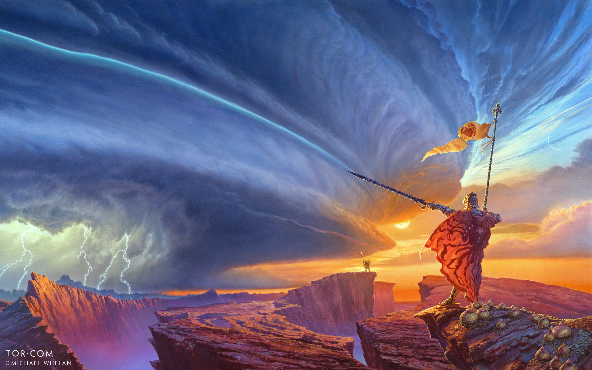
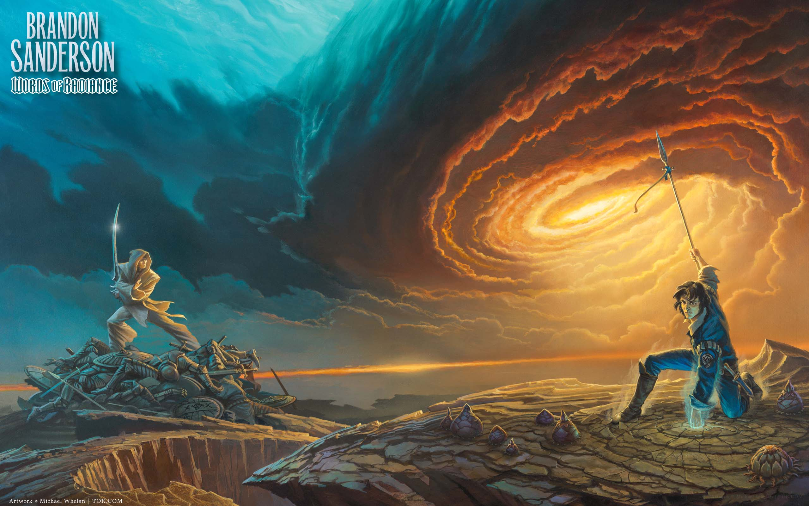
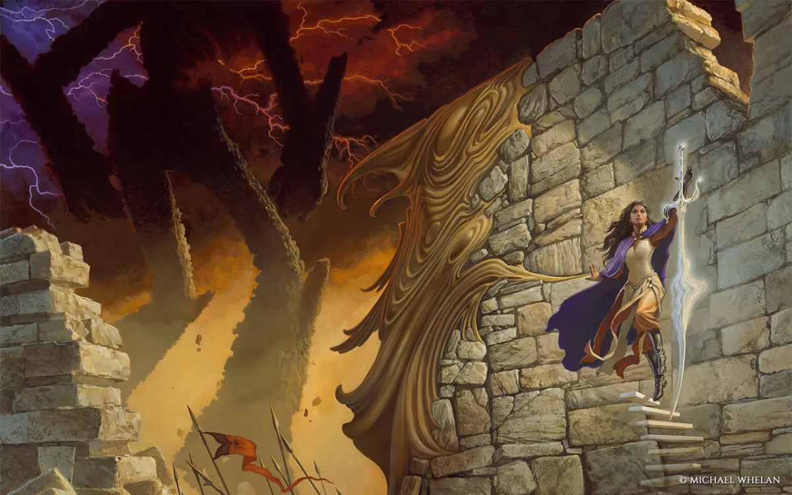

Brandon Sanderson
Libros
Biografía
Volver al inicio
Citas
Universo
Durante la carrera de Sanderson, este ha escrito una vasta cantidad de obras, ya sea "standalone" o partes de sagas.
Aquí va una tabla con las publicaciones más destacadas:
Lista de libros
El archivo de las tormentas
Nacidos de la bruma
Novelas stand-alone
Novelas con secuelas planeadas
El camino de los reyes
El imperio final
Sexto del ocaso
Elantris
Palabras radiantes
El pozo de la ascensión
Yumi y el pintor de pesadillas
El aliento de los dioses
Danzante del filo (novela corta)
El héroe de las eras
Trenza del mar esmeralda
Sombras por Silencio en los bosques del infierno
Juramentada
Aleación de ley
El hombre iluminado
Esquirla del amanecer (novela corta)
Sombras de identidad
Arena blanca
El ritmo de la guerra
Brazales de duelo
El metal perdido
Pequeña galería de portadas de Sanderson.


